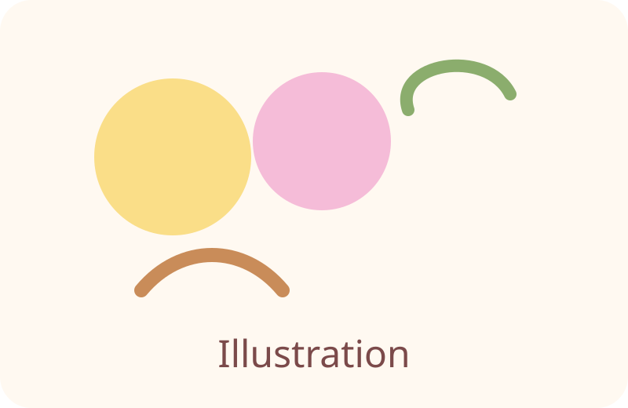
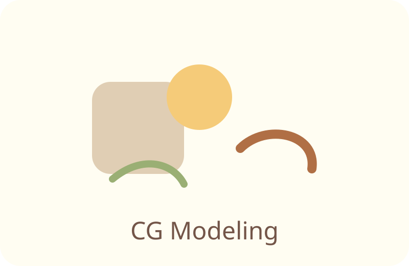
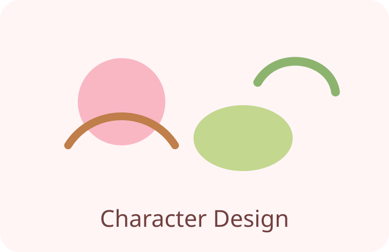

わくわくするような作品をつくる
イラスト・キャラクターデザイン・3DCGモデリングを手がけています。依頼に沿った制作からオリジナルキャラまで、見る人が楽しめる作品づくりを心がけています。
依頼された内容のイラスト作成
使用ツール: Photoshop, Clip Studio Paint

ここに作品イメージを表示できます。画像ファイルを images/illustration-sample.svg に置き換えてください。
Mayaを使用したモデリング
使用ツール: Maya, Substance Painter

ここにモデリング作品を表示できます。画像ファイルを images/cg-modeling-sample.svg に置き換えてください。
オリジナルキャラクターのデザイン
使用ツール: Procreate

ここにキャラクターデザイン作品を表示できます。画像ファイルを images/character-design-sample.svg に置き換えてください。